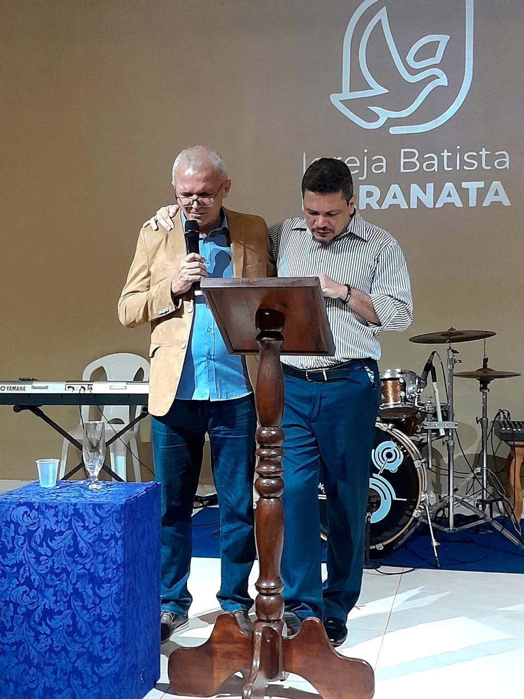

Unindo um coração entregue à precisão técnica para oferecer o nosso melhor Àquele que é digno de todo louvor.
O Maranata Louvor e Adoração não é apenas um grupo de músicos, mas um corpo de adoradores comprometidos com a presença de Deus e o serviço à Igreja local.
Nossa visão fundamenta-se na **Santidade**, **Submissão** e **Serviço**. Acreditamos que a música é uma ferramenta poderosa de conexão espiritual, e por isso, cuidamos de cada detalhe com reverência.
Buscamos a excelência técnica não como um fim em si mesma, mas como uma oferta digna para o Rei dos Reis.
Nossa rotina de serviço e aperfeiçoamento constante.
Planejamento antecipado via Planning Center para que todos possam se organizar com excelência.
Momentos de alinhamento técnico e espiritual todas as quintas-feiras às 19h30.
Workshops trimestrais com profissionais para aperfeiçoamento das técnicas vocais e instrumentais.
Investimos em tecnologia de ponta para que nada seja um obstáculo entre a congregação e a experiência de adoração.
Sistemas de monitoramento in-ear e mixagem digital via Dante.
Cenografia pensada para criar ambientes propícios à oração e celebração.
Experiência visual integrada para quem está no templo ou em casa.
Nossa jornada de adoração capturada em imagens.

Destaque
2.4M Visualizações • Live em Maranata
800K Visualizações • Estúdio
150K Visualizações • Especial 10 Anos